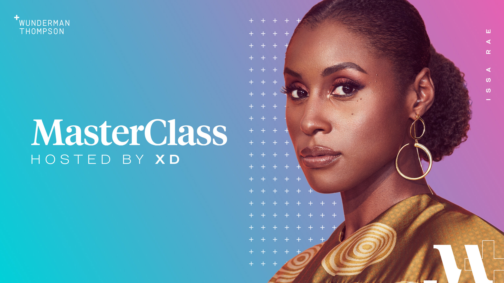

Wunderman Thompson: MasterClass
Overview
Goal
I joined Wunderman Thompson in the middle of a remote-only world and noticed an opportunity to help new and existing team members get together to meet each other. At the same time, the XD team was still new to the agency and needed more visibility as leaders in cultural and digital initiatives.
Solution
We streamed MasterClass courses bi-monthly and had the sessions hosted by the XD team — turning a passive subscription perk into a live, shared experience the whole agency could join, learn from, and talk about together.
Preview

Impact
Building culture through the things we do together: the initiative gave teammates a break from the day-to-day while inspiring us as creatives and professionals — and raised the XD team’s visibility as cultural leaders at the agency.